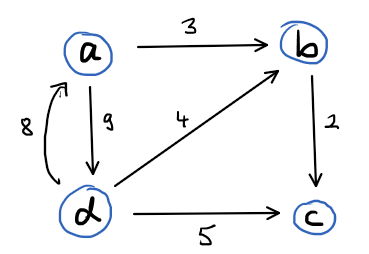

Gegeben sei folgender Graph:
Gib die Adjazenzmatrix zum Graphen an (inf für unendlich).
| a | b | c | d | |
| a | {1:SAC:~xxx~=0} | {1:SAC:~xxx~=3} | {1:SAC:~xxx~=inf} | {1:SAC:~xxx~=9} |
| b | {1:SAC:~xxx~=inf} | {1:SAC:~xxx~=0} | {1:SAC:~xxx~=2} | {1:SAC:~xxx~=inf} |
| c | {1:SAC:~xxx~=inf} | {1:SAC:~xxx~=inf} | {1:SAC:~xxx~=0} | {1:SAC:~xxx~=inf} |
| d | {1:SAC:~xxx~=8} | {1:SAC:~xxx~=4} | {1:SAC:~xxx~=5} | {1:SAC:~xxx~=0} |